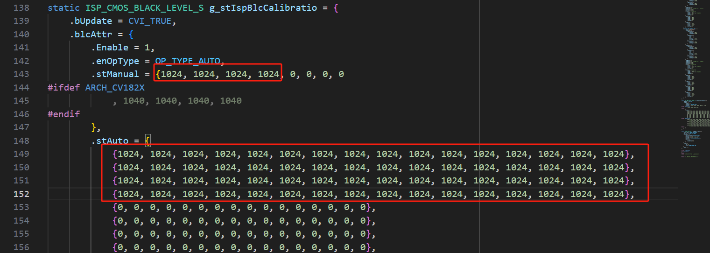

7. ISP基本功能¶
Sensor驱动功能皆由operation callbacks实现。本章节以使用者以详悉Sensor datasheet为前提描述ISP Callbacks应实现的基本功能。调试ISP相关callback时，请重新打开之前注解的 SAMPLE_COMM_ISP_Run , xxx_default_reg_init的调用。
7.1. 开发流程¶
请依序实现以下ISP基本功能callbacks
pfn_cmos_sensor_init
pfn_cmos_sensor_exit
pfn_cmos_sensor_global_init
pfn_cmos_set_image_mode
pfn_cmos_set_wdr_mode
pfn_cmos_get_isp_default
pfn_cmos_get_sns_reg_info
7.2. 注意事项¶
pfn_cmos_sensor_init： 使用Sensor沟通接口(I2C/SPI)实现厂商提供的初始序列.
应注意沟通接口结构的正确性.
因为AE相关的Callbacks也会在sensor init之前呼叫, 需在sensor开始输出数据之前设定Sensor AE缓存器。
可参考xxxx_sensor_ctrl.c 内的xxxx_default_reg_init。
pfn_cmos_sensor_exit： 关闭使用的沟通接口。
pfn_cmos_sensor_global_init： 初始化sensor驱动参数。
pfn_cmos_set_image_mode： 设定sensor输出的格式。Sensor驱动应选择最接近的分辨率作输出格式。
pfn_cmos_set_wdr_mode： 设定sensor输出是否为WDR模式。
pfn_cmos_get_isp_default： 提供与sensor相关的ISP参数。
pfn_cmos_get_sns_reg_info： 提供储存在Sensor驱动里的AE同步讯息。为了同步AE设定与Sensor输出的影像，
当AE callbacks被呼叫时，Sensor驱动不会立刻写入sensor的缓存器，而是储存修改的设定；
Firmware会在固定周期呼叫pfn_cmos_get_sns_reg_info获得同步信息并且传递给kernel space的ISP驱动。
ISP驱动负责同步写入sensor缓存器。
此外Sensor可能有不同的WDR输出格式，因此影像的大小、Crop位置与MIPI-RX设定也可能随着不同的曝光值重新计算与设定。
Sensor驱动须询问厂商计算公式，ISP驱动会依此更新对应的模块。
pfn_cmos_get_sns_reg_info回传的结构分三大类：
typedef struct _ISP_SNS_SYNC_INFO_S {
ISP_SNS_REGS_INFO_S snsCfg;
ISP_SNS_ISP_INFO_S ispCfg;
ISP_SNS_CIF_INFO_S cifCfg;
} ISP_SNS_SYNC_INFO_S;
snsCfg表示需要同步的sensor缓存器，ispCfg表示需要同步的Crop信息，cifCfg表示需要同步的mipi-rx设定.
当need_update为True时，表示这类的同步数据需要ISP在指定的u8DelayFrmNum更新。
snsCfg内每一个缓存器也有bUpdate指示缓存器是否需要更新。
第一次调用pfn_cmos_get_sns_reg_info会进行配置i2c相关讯息， 建立register地址映像、获取sns、crop、wdr size等信息，如下图。

后面反复调用pfn_cmos_get_sns_reg_info则是进行对修改的AE register讯息做出暂存，如下图。

暂存后的AE寄存器讯息最终会call isp_snsSync_info_set将AE资料updata到ISP driver，ISP driver会在delayFrmNum后下i2c，设定sensor寄存器。
pfn_cmos_get_isp_black_level：
部分sensor有默认的black leve offset，例如imx577，将偏移填入下方数组。
{kind=link}
